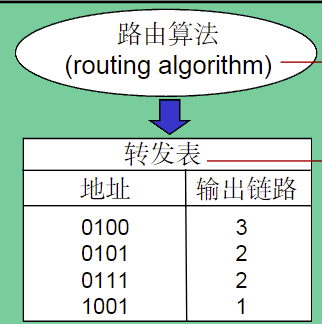

网络层
网络层服务¶
从发送主机向接收主机发送数据段
路由器检验所有穿越它的IP数据报的头部域
网络层核心功能：转发与路由
网络层拥塞控制策略¶
例：ATM ABR控制拥塞
ABR：如果发送方路径拥塞，将发送速率降低到最低保障速率
RM：由发送方发送，交换机设置RM cell位，NI bit表示速率不许增长，CI bit表示拥塞指示
虚电路网络与数据报网络¶
数据报网络提供网络层无连接服务，虚电路网络提供网络层连接服务
类似于传输层的无连接服务UDP和面向连接服务TCP，不同之处在于：是主机到主机服务，同时也是网络核心的实现
虚电路¶
从一个源主机到目的主机，类似于电路的路径（是逻辑连接）
- 分组交换
- 每个分组的传输利用链路的全部带宽
- 源到目的路径经过的网络层设备共同完成虚电路功能
每个分组携带虚电路标识（VC ID），而不是目的主机地址
虚电路经过每个网络设备，维护每条经过它的虚电路连接状态
链路、网络设备资源，可以面向VC进行预分配
VC的具体实现¶
每条虚电路包括：
- 从源主机到目的主机的一条路径
- 虚电路标识（VC ID），沿路每段链路一个编号
- 沿路每个网络层设备都利用转发表记录经过的每一条虚电路
沿某条虚电路传输的分组，携带对应虚电路的VCID，而不是目的地址
同一条VC，在每一段链路上的VCID通常不同
VC转发表¶

VC路径上的每个路由器都需要维护VC连接的状态信息
虚电路信令协议¶
- 主要用于VC的建立维护与拆除
- 应用于虚电路网络
- 目前Internet不采用
数据报转发表¶
由路由算法确定通过网络的端到端路径，转发表确定在本路由器如何转发分组

存在40多亿个IP地址，为了减少路由表大小，将IP地址分组，当IP地址属于某个范围，则使用相对应的链路接口转发

最长前缀匹配优先¶
在检索转发表时，优先选择与分组目的地址匹配前缀最长的入口
路由器体系结构¶
IP协议¶
IP数据报分组格式¶
路由算法¶
路由协议¶
IP相关协议¶
ICMP协议¶
全称为互联网报文控制协议
ICMP协议是IP协议的一部分，用于报告网络层事件和错误
ICMP报文分为两类：
- 差错报告报文
- 目的不可达
- 源抑制
- 超时/超期
- 参数问题
- 重定向
- 网络探寻报文
- 回声请求与应答报文
- 时间戳请求与应答报文
几种不发送ICMP差错报告报文的特殊情况：
- 对ICMP差错报告报文的响应，不发送ICMP差错报告报文
- 除了第1个IP数据报分片外，对后续所有分片都不发送
- 对所有多播IP数据报，不发送ICMP差错报告报文
- 对具有特殊地址的IP数据报不发送ICMP差错报告报文
ICMP报文封装到IP数据报中传输

如何获得IP地址？¶
硬编码：静态配置
动态主机配置协议DHCP¶
- 从服务器动态获取
- IP地址
- 子网掩码
- 默认网关地址
- DNS服务器名称与IP地址
由客户端（DHCP Client）向服务器（DHCP Server）提出配置申请，DHCP Server为网络上的每个设备动态分配IP地址、子网掩码、默认网关地址，域名服务器（DNS）地址和其他相关配置参数，以便可以与其他IP网络通信。
DHCP流程
- 主机广播发送DHCP DISCOVER“发现报文”
- DHCP服务器利用DHCP OFFER“提供报文”响应
- 主机请求IP地址DHCP REQUEST“请求报文”
- DHCP服务器为期分配IP地址 DHCP ACK“确认报文”
网络地址转换（NAT）¶
- 网络地址转换（NAT）是一种IP地址转换技术，它允许多个私有网络使用同一个公共IP地址。
优势：
- 本地网络设备IP地址变更，无须通知外界网络
- 变更ISP时，无需修改内部网络设备IP地址
- 内部网络设备对外界网络不可见，即不可直接寻址
所有离开本地网络去往Internet的数据报的源IP必须替换为相同的NAT地址；本地网络内部的通信的IP数据报的源与目的IP地址均在子网内
NAT穿透问题¶
- 客户期望连接内网地址为10.0.0.1的服务器，客户不能直接利用地址10.0.0.1直接访问
- 对外唯一可见NAT地址：138.76.29.7

- 解决方法1：静态配置NAT，将特定端口的连接请求转发给服务器
- 解决方法2：利用UPnP互联网网关设备协议(IGD)自动配置
- 解决方法3：中继，NAT内部客户和中继服务器建立连接，外部客户也和中继服务器连接
ARP协议¶
在同一个LAN内，如何在已知目的接口的IP地址的前提下确定其MAC地址？
LAN中每一个IP节点都维护了一个<IP,MAC>表，ARP协议主要是查询和更新这个表，表附带了TTL（Time-to-Live）字段，用来限制ARP表项的生存时间。
同一局域网内¶

从一个LAN路由至另一个LAN¶

路由算法¶
路由与转发¶
路由算法确定去往目的网络的最佳路径；转发表确定在本路由器如何转发分组